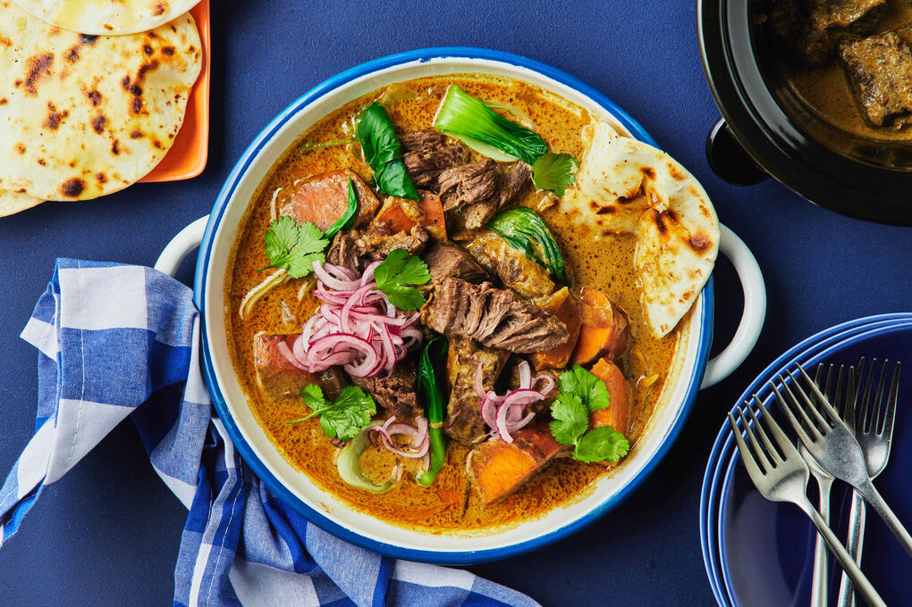

Про кухню Індонезії
Індонезійська кухня відома своїм багатством ароматів, використанням спецій і свіжих інгредієнтів. Основу складають рис, локшина, морепродукти, курятина, свинина та яловичина, доповнені кокосовим молоком, чилі й травами, такими як галангал, лемонграс та лаймове листя. Популярні страви включають національне блюдо насі горенг (смажений рис), сате (шашлички з м'яса з арахісовим соусом), ренданг (пряна тушкована яловичина) та гадо-гадо (овочевий салат із соусом із арахісу). Кухня характеризується поєднанням солодкого, гострого та насичено-солоного смаків.
Виберіть країну
↑ Вгору
Курячий сатеТрадиційна індонезійська страва, що складається з ніжних шматочків курятини, нанизаних на бамбукові шпажки, смажених на грилі та поданих із насиченим арахісовим соусом.
Сате з яловичиниІндонезійська страва, що складається з маринованих шматочків яловичини, обсмажених на вугіллі на шпажках, та подається з пряним арахісовим або соєвим соусом.
Курка ТалівангТадиційна індонезійська страва з острова Ломбок, що представляє собою запечену або смажену курку, приправлену пряним соусом із суміші чилі, часнику, лемонграсу та пасти з креветок.
Риба на гриліСтрава, яка складається зі свіжої риби, замаринованої у суміші спецій, тамаринду та соєвого соусу, та запеченої на відкритому вогні. Подається зі свіжими овочами та пряним соусом самбал.
Джакартський яловичий супНасичений суп на основі кокосового молока, зі шматочками яловичини, субпродуктів, картоплі та томатів, приправлений ароматними спеціями, такими як кардамон, кориця й лемонграс. Подається зі смаженими цибулею, рисом або рисовими коржами.
Тамариндовий овочевий супЛегкий індонезійський суп із овочів, таких як кукурудза, бобові стручки, папая та гарбуз, приправлений кисло-солодким тамариндом і ароматними спеціями. Подається як гарнір до основних страв.
Суп з бичачого хвостаТрадиційний суп, приготований із ніжно тушкованих шматочків бичачого хвоста, овочів, таких як картопля, морква й селера, у прозорому бульйоні з ароматними спеціями. Подається з рисом і соусом самбал.
КонроНасичений суп з яловичих ребер, приправлений сумішшю спецій, таких як коріандр, горіх клювак і лемонграс, що надають страві глибокий аромат і темний колір. Подається з рисом або рисовими коржами.

Мі горенгПопулярна індонезійська страва, що складається з смаженої локшини, приправленої соєвим соусом, часником, цибулею, овочами та м'ясом або морепродуктами. Часто подається з яйцем, свіжими овочами та гострим самбалом.
БакміІндонезійська страва з локшиною, яка може бути подана як в супі, так і смаженою. Локшина зазвичай готується з м'ясом, морепродуктами або овочами, приправлена соєвим соусом, часником і спеціями.
Насі горенгКласична індонезійська страва, що складається з смаженого рису, приправленого соєвим соусом, часником, цибулею та спеціями. До нього часто додають яйце, овочі, курку, креветки або м'ясо, а також подають з гострим самбалом і свіжими овочами.
Кокосовий рисАроматна страва, в якій рис готується в кокосовому молоці з додаванням лемонграсу, листя лайму і спецій. Подається з різними гарнірами, такими як смажене курча, яйце, смажена цибуля та самбал.
Гадо-гадоОвочевий салат, що складається з варених овочів, картоплі, тофу та темпеху, заправлений ароматним арахісовим соусом. Подається з вареними яйцями та часто доповнюється смаженими цибулею та крекерами.
КетопракПопулярна вулична страва в Індонезії, що складається з рисових локшин, тофу, темпеху та варених яєць, заправлених соусом із арахісу, часнику та соєвого соусу. Подається з овочами, такими як огірки та пророщені боби.
Курка-карріКаррі з ніжних шматочків курятини, тушкованих у ароматному каррі з кокосовим молоком, спеціями, такими як куркума, коріандр, імбир та лемонграс. Подається з рисом або локшиною, надаючи страві насичений смак і пряний аромат.

Каррі рендангТрадиційна індонезійська страва, що складається з яловичини, тушкованої в ароматному соусі з кокосового молока, куркуми, імбиру, часнику та численних спецій. Страва готується повільно, поки м'ясо не стане м’яким і не просочиться пряним, насиченим смаком.
СендолПопулярний індонезійський десерт, що складається з зелених рисових локшин, приготованих з крохмалю, поданих з кокосовим молоком, льодом та солодким пальмовим сиропом. Страва часто має освіжаючий смак і зазвичай подається холодною.
Рисові кулькиТрадиційний індонезійський десерт, що складається з м'яких рисових кульок, наповнених солодкою пастою з арахісу або цукру, які варяться в імбирному бульйоні. Подається з гарячим сиропом і іноді з кунжутом або горіхами для додаткового смаку.
Балійський молочний пирігПопулярний десерт в Індонезії, що складається з тонкого хрусткого тіста, заповненого солодким молочним кремом. Пиріг часто має ніжну ванільну нотку і є популярним сувеніром серед туристів на острові Балі.
Смажені бананиПопулярна індонезійська закуска, що складається з стиглих бананів, обкачаних у борошно та смажених до золотистої скоринки. Вони можуть подаватися з медом, цукровою пудрою або кокосовим соусом для додаткового смаку.